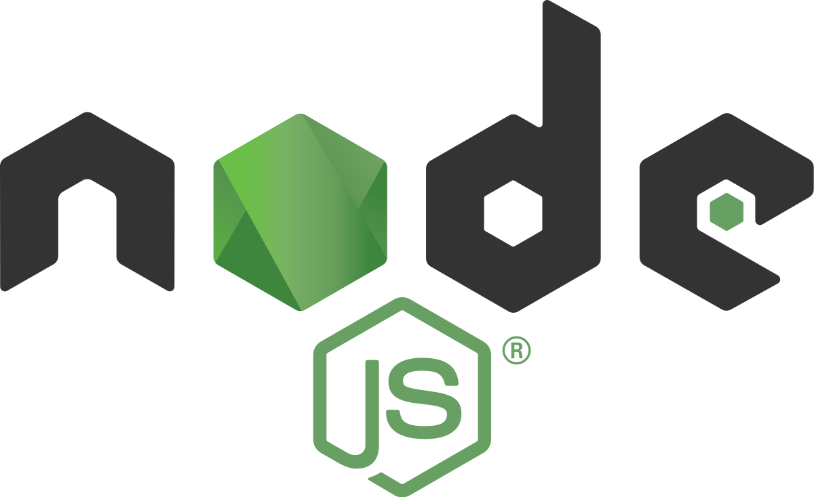
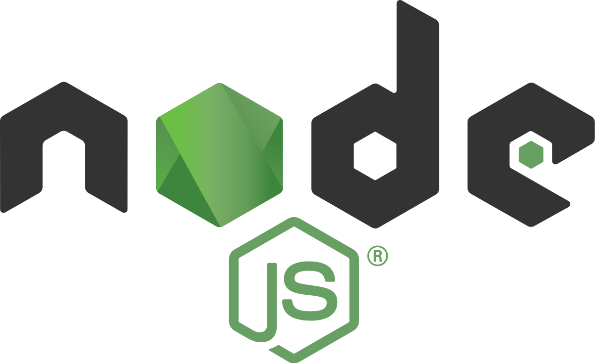

O que é Nodejs
NodeJS é uma plataforma back-end construída em cima do motor de interpretação de Javascript do Chrome, chamado V8 que, por sua vez, foi construído utilizando C++, que permite a execução de scripts Javascript no lado do servidor. “Node.js é uma plataforma para construir aplicações web escaláveis de alta performance usando JavaScript” Não podemos dizer que Node é um Framework nem um Middleware, nem uma Linguagem, na verdade trata-se de um runtime Javascript. Com o crescimento exponencial de bibliotecas, recursos e da comunidade, podemos dizer que Node tornou-se uma plataforma. Isso significa que com o Node.js é possível criar aplicações Javascript para rodar como uma aplicação standalone em uma máquina, não dependendo de um browser para a execução, como estamos acostumados.


 



Arquitetura
Apesar de parecer complexa, a arquitetura do NodeJs tem um funcionamento simples. O seu Event Loop Single Thread é capaz de lidar com concorrência sem abrir mão do desempenho ou sem necessitar de grandes quantidades de recursos, o que faz com que esta seja adotada para grandes e pequenas aplicações.
Single Thread Event Loop
Um evento no node se refere à qualquer ação executada, seja uma conexão, requisição, abertura de arquivos, etc. No Node é possível criar, disparar e ouvir eventos customizados, através do módulo de Eventos. Podemos entender o Event Loop como um loop que busca novas instruções constantemente. Como o NodeJs roda em uma única thread, há somente um evento ocorrendo por vez, e o que pode parecer uma limitação, na verdade se torna muito útil, pois simplifica a maneira com que se programa, não precisando se preocupar com eventos concorrentes, apenas com o não-bloqueio desse loop. O bloqueio desse loop ocorre quando um código JavaScript demora muito para executar e não retorna o controle para o Event loop, bloqueando a execução de qualquer outro código JavaScript concorrente. No event loop temos a pilha de chamadas (Call Stack), que consiste em uma LIFO (Last In, First Out), e a fila composta de call backs. Call backs podem ser interpretadas como uma função que é chamada quando uma outra determinada função possuir um determinado valor, ou, de maneira informal: “Função A, chame a função B quando você possuir este valor X”. Esse loop checa constantemente esta pilha, verificando se há alguma função a ser executada. Note que só é possível remover um item da pilha, caso este chegue ao fim de sua execução. Se a call stack estiver vazia, o primeiro evento é movido da fila de call backs para a call stack, onde será executado, e essa ação se chama “tick”.
Exemplo:
O exemplo pode ser executado nesse link: CallStack NodeJS
Na imagem acima temos o detalhe da execução do algoritmo. Nota-se que as chamadas são empilhadas na ordem que acontecem, onde a última está no topo, pois é chamada por último na função “foo”. Conforme a execução ocorre, percebemos a seguinte ordem de execução:
Podemos representar as etapas desse mecanismo através da seguinte imagem:
Por baixo disso, temos a libuv, que consiste em uma pool de 4
threads que lida com operações que são muito pesadas para o event loop, como operações
de entrada e saída, abertura e fechamento de conexões, setTimeout(), entre outros.
Timers: nesse estágio, são executadas callbacks programadas por uma
função do tipo setTimeout e setInterval.
Pending Callbacks: Callbacks de entrada e saída deixadas para serem
executadas na próxima iteração do loop são executadas nesse momento.
Idle, Prepare: Uso interno do node.
Poll: Recupera eventos de entrada e saída.
Check: Invoca callbacks do setIntermediate()
Close callbacks: Nesse passo, callbacks de fechamento são
gerenciados, como por exemplo o fechamento de um arquivo, ou um socket.
Non-blocking I/O x Blocking I/O
A simplicidade e alta escalabilidade, onde é possível criar e subir um servidor rapidamente. Além disso, considerado para muitos um problema de segurança preocupante, a facilidade de integrar recursos novos através de dependências e frameworks é um dos destaques do Node. Performance, uma vez que é baseado na libuv (Escrito em C), e interpreta código JavaScript com a ajuda do motor V8 (Escrito em C++) do Google, o qual possui constante revisão de performance por parte desta. O Node é capaz de lidar com várias requisições simultâneas de maneira eficiente através de sua arquitetura Event-loop single-thread e non-blocking I/O, o que o torna uma escolha muito popular quando se trata de baixo custo de processamento para grandes e pequenas aplicações. Como o Node executa fora de um navegador, sua performance e gerenciamento de recursos acaba sendo muito mais eficiente, podendo usar recursos que não estão presentes nestes, como se comunicar diretamente com o gerenciador de arquivos do sistema, sockets TCP, entre outros. Por se tratar de um projeto open-source, possui suporte de grandes empresas e um número imenso de usuários adicionando e aperfeiçoando recursos diariamente. Com o crescimento da IoT, muitas dessas soluções tem empregado Node, por sua facilidade e eficiência, considerando que o Node é capaz de lidar com várias requisições através de sua arquitetura, o que é ideal para dispositivos com baixo poder de processamento como sistemas embarcados. Também muito popular, a arquitetura de microsserviços - utilizada por grandes empresa como Netflix e Amazon - ganha força com o uso do Node, pois a utilização de frameworks, como o Express, permite a criação de módulos responsáveis por partes específicas de um sistema, tornando fácil adicionar funcionalidades e dar manutenção. Entre outras aplicações, está o desenvolvimento de uma única API com Node, capaz de integrar sistemas Web, Desktop e Mobile, tornando aplicações mais consistentes e solidificando o ecossistema.
Bloquear o Event Loop pode fazer com que a aplicação aguarde muito tempo no mesmo estado, ocasionando uma baixa performance ou pode até derrubá-la. Quando uma callback demora muito para completar, o cliente fica aguardando uma resposta, fazendo com que a aplicação pare de funcionar por um determinado período.
Exemplo:
O exemplo pode ser executado nesse link: Bloqueando o Event Loop
O programa acima utiliza expressões regulares (REGEX) para validar caminhos no linux. No entanto, se trata de uma expressão regular vulnerável, uma vez que caso haja uma consulta com 100 barras '/' seguidas de uma quebra de linha '\n', o Event Loop ficará rodando eternamente (Bloqueio do Event Loop), fazendo com que a aplicação seja derrubada.
Gerenciamento de Memória
Considerando que cada aplicação necessita de quantidades de memória suficientes para funcionar, é necessário reutilizar a memória, principalmente sabendo que este é um recurso não muito abundante em alguns sistemas. No node, a alocação de memória é feita de forma automática pelo Garbage Collector, nos livrando da preocupação de alocar memória e dimensionar elementos corretamente. O Garbage Collector (Coletor de Lixo), consiste em um mecanismo para gerenciamento automático de memória. Esse trabalho é feito recuperando a memória ocupada por objetos não utilizados, e ele é capaz de identificar isso pelas referências entre os objetos. Se um objeto não é referenciado ou não referencia outro objeto, é considerado lixo. É possível entender isso pelos seguintes diagramas:
No diagrama à esquerda, podemos notar que há pontos (objetos) que não estão sendo referenciados ou não referenciam quaisquer outros objetos, bem como não podem ser alcançados a partir da raíz. O Garbage Collector então atua nesses pontos, deletando-os para recuperar a memória, que fica disponível para outros a utilizarem.
Node, C++ e a Libuv
Baseado no motor V8 e na biblioteca libuv, o node é conhecido por lidar bem com tarefas concorrentes. Essa execução se deve justamente pela utilização da biblioteca open-source libuv, a qual utiliza thread-pool, que acaba fazendo o gerenciamento de processos, como sinalização e comunicação. Dentre os recursos importantes presentes no node, podemos destacar alguns ligados à libuv, como o IPC (Comunicação entre processos), eventos do file system, sockets TCP e UDP assíncronos, controle de threads, processos filhos e sinalização. O Event Loop, já mencionado aqui, é parte central dessa biblioteca, e é ele que estabelece o conteúdo para todas as operações de entrada e saída (I/O).
Aplicações e Vantagens
Entre as principais vantagens do nodejs, podemos citar:
A simplicidade e alta escalabilidade, onde é possível criar e subir um servidor rapidamente. Além disso, considerado para muitos um problema de segurança preocupante, a facilidade de integrar recursos novos através de dependências e frameworks é um dos destaques do Node.
Performance, uma vez que é baseado na libuv (Escrito em C), e interpreta código JavaScript com a ajuda do motor V8 (Escrito em C++) do Google, o qual possui constante revisão de performance por parte desta. O Node é capaz de lidar com várias requisições simultâneas de maneira eficiente através de sua arquitetura Event-loop single-thread e non-blocking I/O, o que o torna uma escolha muito popular quando se trata de baixo custo de processamento para grandes e pequenas aplicações.
Como o Node executa fora de um navegador, sua performance e gerenciamento de recursos acaba sendo muito mais eficiente, podendo usar recursos que não estão presentes nestes, como se comunicar diretamente com o gerenciador de arquivos do sistema, sockets TCP, entre outros.
Por se tratar de um projeto open-source, possui suporte de grandes empresas e um número imenso de usuários adicionando e aperfeiçoando recursos diariamente.
Com o crescimento da IoT, muitas dessas soluções tem empregado Node, por sua facilidade e eficiência, considerando que o Node é capaz de lidar com várias requisições através de sua arquitetura, o que é ideal para dispositivos com baixo poder de processamento como sistemas embarcados. Também muito popular, a arquitetura de microsserviços - utilizada por grandes empresa como Netflix e Amazon - ganha força com o uso do Node, pois a utilização de frameworks, como o Express, permite a criação de módulos responsáveis por partes específicas de um sistema, tornando fácil adicionar funcionalidades e dar manutenção.
Entre outras aplicações, está o desenvolvimento de uma única API com Node, capaz de integrar sistemas Web, Desktop e Mobile, tornando aplicações mais consistentes e solidificando o ecossistema.
Nos exemplos abaixo, é possível observar um servidor Node criado com poucas linhas:
Exemplo de servidor Node:
O exemplo pode ser executado nesse link: Servidor utilizando Node
Com auxílio de alguns frameworks do Node, como o express, é possível criar um servidor e gerenciar rotas de forma mais fácil ainda:
Exemplo de servidor Node utilizando o framework express:
O exemplo pode ser executado nesse link: Servidor Node utilizando Express
Referências
- A complete guide to threads in Node.js
- About NodeJS
- Dependencies
- Don't Block the Event Loop (or the Worker Pool)
- Garbage Collection
- Gerenciando o fluxo assíncrono de operações em NodeJS
- How Node.js Works: A Look Behind The Scenes
- Introduction to Node.js
- libuv
- Node JS Architecture – Single Threaded Event Loop
- Node.js Garbage Collection Explained
- Node.js - Uma descrição do ponto de vista da Arquitetura de Software
- Node.js V8 internals: an illustrative primer
- Node.js: what it is, when and how to use it, and why you should
- Overview of Blocking vs Non-Blocking
- Um Mergulho no Event Loop
- Understanding Node.js Architecture
- What exactly is Node.js?
- Why the Hell Would You Use Node.js